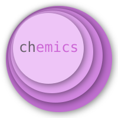

19.6
Atomic elements
Bed expansion factor
Bubble velocity
Choking velocity
Conversions
Devolatilization time
Gas density
Gas thermal conductivity
Gas viscosity
Geldart particle classification
Minimum fluidization velocity
Molecular weight
Terminal velocity
Transport velocity
Chemics
Docs
»
Index
Index
C
|
D
|
F
|
G
|
K
|
M
|
R
|
S
|
U
C
chemics.bed_expansion_factor (module)
chemics.bubble_velocity (module)
chemics.choking_velocity (module)
chemics.conversions (module)
chemics.devol_time (module)
chemics.gas_density (module)
chemics.gas_thermal_conductivity (module)
chemics.gas_viscosity (module)
chemics.geldart (module)
chemics.minimum_fluidization_velocity (module)
chemics.molecular_weight (module)
chemics.terminal_velocity (module)
chemics.transport_velocity (module)
D
devol_time() (in module chemics.devol_time)
F
fbexp() (in module chemics.bed_expansion_factor)
G
geldart_chart() (in module chemics.geldart)
K
k_gas_inorganic() (in module chemics.gas_thermal_conductivity)
k_gas_organic() (in module chemics.gas_thermal_conductivity)
M
massfrac_to_molefrac() (in module chemics.conversions)
molefrac_to_massfrac() (in module chemics.conversions)
mu_gas() (in module chemics.gas_viscosity)
mu_graham() (in module chemics.gas_viscosity)
mu_herning() (in module chemics.gas_viscosity)
mw() (in module chemics.molecular_weight)
mw_mix() (in module chemics.molecular_weight)
R
rhog() (in module chemics.gas_density)
S
slm_to_lpm() (in module chemics.conversions)
U
ubr() (in module chemics.bubble_velocity)
uch_bifan() (in module chemics.choking_velocity)
uch_leung() (in module chemics.choking_velocity)
uch_matsen() (in module chemics.choking_velocity)
uch_psri() (in module chemics.choking_velocity)
uch_punwani() (in module chemics.choking_velocity)
uch_yang() (in module chemics.choking_velocity)
uch_yousfi() (in module chemics.choking_velocity)
uch_zhang() (in module chemics.choking_velocity)
umf_coeff() (in module chemics.minimum_fluidization_velocity)
umf_ergun() (in module chemics.minimum_fluidization_velocity)
umf_reynolds() (in module chemics.minimum_fluidization_velocity)
ut() (in module chemics.terminal_velocity)
ut_ganser() (in module chemics.terminal_velocity)
ut_haider() (in module chemics.terminal_velocity)
utr() (in module chemics.transport_velocity)